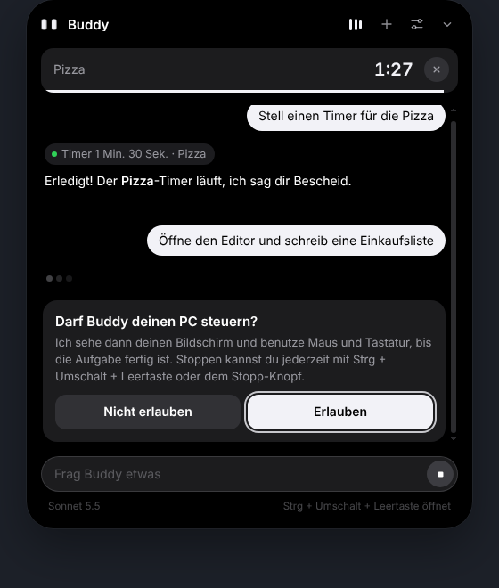

Automatische Modellwahl
Ein kleines Modell prüft jede Anfrage und nimmt das günstigste, das reicht. Hakt es, wechselt Buddy selbst auf ein stärkeres.
Testversion 0.4 · Windows 10 & 11
Buddy Island ist ein kleines Island oben in der Mitte deines Windows-Bildschirms. Fragen, Timer, Musik, Termine, Mitteilungen, und wenn du willst, bedient Buddy den PC für dich. Er läuft gratis mit einer lokalen KI auf deinem PC oder mit Claude, OpenAI, Grok oder Gemini.
Gratis · ca. 120 MB · läuft lokal ohne Konto, API-Key optional
Im Ruhezustand zeigt Buddy nur seine Augen.
Buddy braucht kein Konto bei uns. Er startet mit einer lokalen KI und nimmt auf Wunsch deinen eigenen API-Key.
Ein kleines Modell prüft jede Anfrage und nimmt das günstigste, das reicht. Hakt es, wechselt Buddy selbst auf ein stärkeres.
Mehrstufige Aufgaben teilt Buddy in Schritte und meldet nichts als erledigt, was er nicht geprüft hat. Riskantes fragt er vorher.
Kosten, Tokens und Limits von Buddy, Claude Code, Codex und mehr. Was ein Anbieter nicht herausgibt, steht ehrlich als «nicht verfügbar».
Claude, OpenAI, Grok, Gemini oder ein lokales Modell von Hugging Face. Was ein Modell nicht kann (z. B. Bildschirmfotos), sagt Buddy ehrlich.
Buddy prüft Arbeitsspeicher, Prozessor und Grafikkarte, empfiehlt das schnellste und das beste Modell und richtet es mit einem Klick ein. Danach läuft er ohne Internet.
Buddy übernimmt beim Start die Sprache von Windows: Oberfläche und Antworten kommen auf Deutsch, Englisch oder Französisch.
Claude Code, Codex, ChatGPT, Gemini CLI und lokale Laufzeiten findet Buddy selbst. Was nicht installiert ist, taucht in Buddy gar nicht erst auf.
«Öffne den Editor und schreib eine Einkaufsliste.» Buddy fragt vorher und bedient dann Maus und Tastatur (mit Claude).
Spotify oder YouTube erscheinen mit Cover im Island, die Balken folgen dem echten Systemton. Pause und Weiter direkt dort.
Mit einem iCal-Link aus Google oder Outlook erinnert Buddy dich kurz vor Terminen.
WhatsApp, Mail und Discord erscheinen kurz als Vorschau oben statt unten rechts.
Sprich mit Buddy über das Mikrofon, ein Tastenkürzel oder das Wake-Word. Antworten liest er vor.
Läuft ein Spiel oder Vollbild, verschwindet Buddy komplett. Verpasstes zeigt er danach.
Lege feste Aufträge auf eine Taste, zum Beispiel F9 → «Pausier die Musik».
Ein Visualizer, der wirklich zuhört, ein Bildschirmrand, der zur Musik leuchtet, und ein Eingabefeld, das immer sichtbar bleibt.
Im Leerlauf läuft keine einzige Animation. CPU und GPU bleiben praktisch bei 0 %.





Klick oben auf «Für Windows herunterladen».
Doppelklick auf die Datei. Zeigt Windows «Der Computer wurde durch Windows geschützt», klick auf «Weitere Informationen» → «Trotzdem ausführen». Buddy ist (noch) nicht kostenpflichtig signiert.
Klick aufs Island und dann auf «Lokale KI einrichten»: Buddy wählt das passende Modell für deinen PC und lädt es. Lieber Claude, OpenAI, Grok oder Gemini? Füge in den Einstellungen unter «Provider & API-Keys» deinen Key ein.
Mit Strg + Umschalt + Leertaste öffnest du Buddy von überall. Updates kommen automatisch.
Buddy läuft nur auf deinem PC. Keine Werbung, keine Statistiken.
API-Keys und Kalender-Link liegen mit der Windows-Verschlüsselung nur auf deinem PC. Lokale Modelle schicken gar nichts weg.
Texte gehen nur an den KI-Anbieter, den du wählst. Bildschirmfotos nur bei der PC-Steuerung mit Claude, und nur nachdem du erlaubt hast.
Nein. Ohne Key läuft Buddy mit einem lokalen Modell gratis auf deinem PC. Ein Key von Claude, OpenAI, xAI (Grok) oder Google (Gemini) macht die Antworten klüger und ist nötig für die PC-Steuerung (nur Claude). Du bezahlst beim Anbieter nur, was du brauchst, meist wenige Rappen pro Unterhaltung.
Buddy misst Arbeitsspeicher, Prozessor und Grafikkarte und schlägt zwei Modelle vor: das schnellste und das mit den besten Antworten. Mit einer NVIDIA-Grafikkarte laufen auch grössere Modelle flüssig, sonst sind kleine Modelle wie Qwen2.5 1.5B die beste Wahl. Der erste Download braucht etwa 1 bis 3 GB.
In der Sprache von Windows. Die Oberfläche gibt es auf Deutsch, Englisch und Französisch, für andere Sprachen ist sie englisch, die Antworten kommen trotzdem in deiner Sprache. In den Einstellungen kannst du die Sprache auch fest wählen.
Programme ohne kostenpflichtiges Signatur-Zertifikat zeigen beim ersten Start eine SmartScreen-Warnung. Buddy ist ein Testprojekt und deshalb noch nicht signiert.
Noch nicht. Buddy ist im Moment nur für Windows 10 und 11.
Nein. Im Spielmodus versteckt sich Buddy, sobald ein Spiel oder eine Vollbild-App läuft: keine Pop-ups, kein Ton, keine Steuerung.
Windows-Einstellungen → Apps → Buddy Island → Deinstallieren.